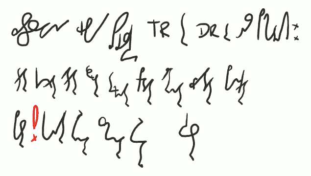
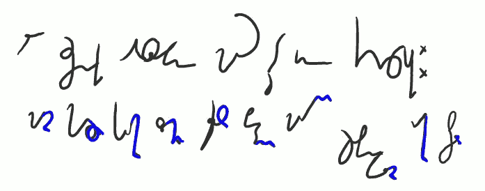
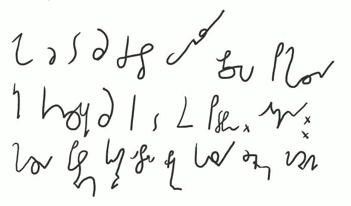

International
InternationalKurs SteMi - Lekcja 06
2013-03-24 | autor: flamenco108Witam w lekcji szóstej. Po ciężkim materiale poprzednio, dziś dla rozrywki porcyjka nieduża i łatwa do przyswojenia:

Zastosowania grupy spółgłoskowej TR DR oraz pochodnych:
traktor kontraktor atraktor destruktor Terminator Predator alternator wizytator pankrator
pasterz*!**korytarz referendarz cmentarz refektarz kwestarz*
Czyli mamy tu do czynienia z końcówką tworzącą czyniących z czynności. Przy czym bardzo wiele wyrazów w tej grupie to starzy, odwieczni imigranci do kraju języka polskiego, z różnych innych języków. Zaadaptowani czasem tak, że trudno ich już odróżnić od macierzystych wyrazów. Kto wie zresztą, czy w niektórych wypadkach ruch nie odbywał się w drugą stronę?

Ale rzeczowniki odsłowne mają też inne końcówki:
macierz harcerz kucharz złomiarz ślusarz bednarz marynarz szopenfeldziarz rakarz stolarz
Oczywiście, wyrazów tych jest bez liku. Pokazuję tu tylko kilka przykładów, które pierwsze mi się przypomniały, byle miały inne końcóweczki.

Jako że to są często wyrazy obcego pochodzenia
ich końcówki są tak do siebie podobne. Odmiany:
harcerza pasterzom kucharzowi o stolarzu brukarze korsarzy żeglarzem macierzami
Jak widać, lekcja krótka, łatwa i przyjemna. Do następnego razu, czyli do lekcji siódmej!
Dotychczas ukazały się lekcje:
2013-03-24 autor: flamenco108